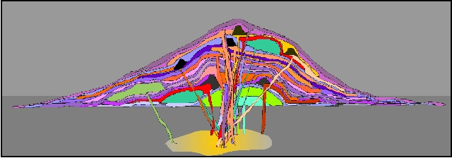
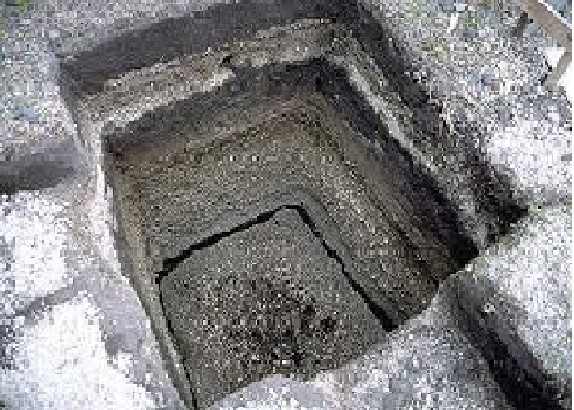

Stratovolcanos
Strato Volcanoes comprise the largest percentage (~60%) of the Earth's individual volcanoes and most are characterized by eruptions of andesite and dacite - lavas that are cooler and more viscous than basalt. These more viscous lavas allow gas pressures to build up to high levels (they are effective "plugs" in the plumbing), therefore these volcanoes often suffer explosive eruptions.

Strato volcanoes are usually about half-half lava and pyroclastic material, and the layering of these products gives them their other common name of composite volcanoes.
This is a schematic diagram of a strato volcano, intended to illustrate the different layers of different materials that comprise them. The purple colors are meant to represent ash layers, either the products of fall-out from big eruption clouds or the products of pyroclastic flows. Notice that these ash layers tend to be thin but widespread. The orange colors represent lava flows, and note that some of them have cinder cones associated with them at the vent.
The green colors are meant to represent lava domes, and notice that they do not flow very far. Each eruption, regardless of what it produces, is fed from the magma chamber by a dike. Most dikes come up through the center of the volcano and therefore most eruptions occur from at or near the summit. However, some dikes head off sideways to feed eruptions on the flanks.

The lava at strato volcanoes occasionally forms 'a'a, but more commonly it barely flows at all, preferring to pile up in the vent to form volcanic domes. Some strato volcanoes are just a collection of domes piled up on each other. Strato volcanoes are commonly found along subduction-related volcanic arcs, and the magma supply rates to strato volcanoes are lower. This is the cause of the cooler and differentiated magma compositions and the reason for the usually long repose periods between eruptions. Examples of strato volcanoes include Mt. St. Helens, Mt. Rainier, Pinatubo, Mt. Fuji, Merapi, Galeras, Cotopaxi, and super plenty others.
Right: This is a pit that has been dug into the ground at Cotopaxi, a big strato volcano near Quito, the capital city of Ecuador. The pit is about 2 meters deep and in it you can clearly see a number of ash layers exposed. It is also easy to see that the layers are different - some are coarse and others are fine, some are dark-colored and others are light-colored.